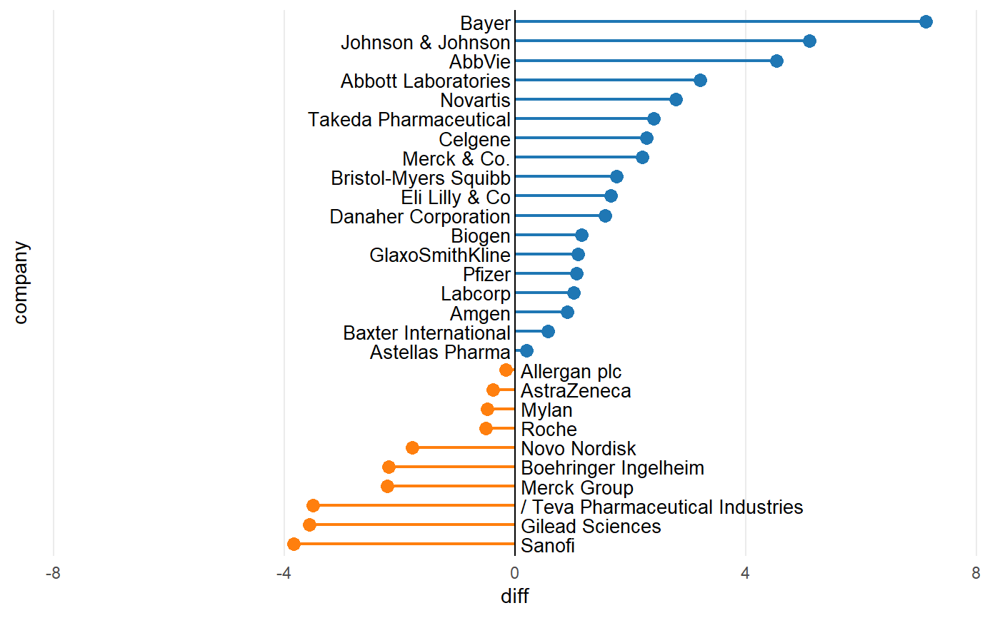
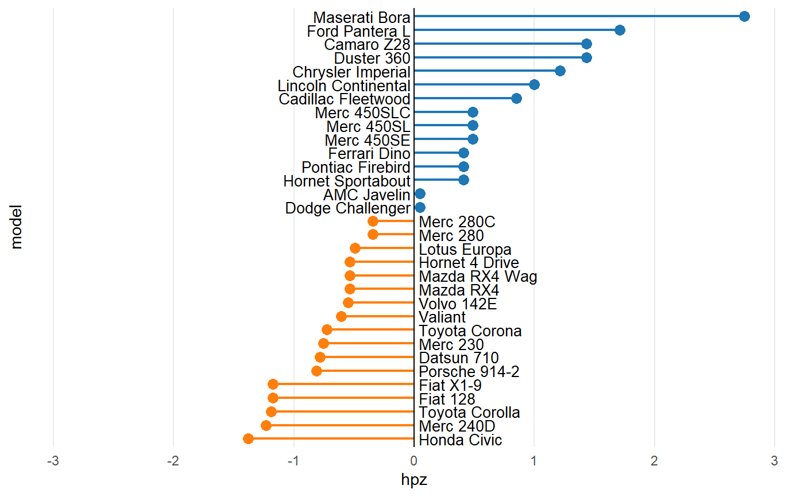
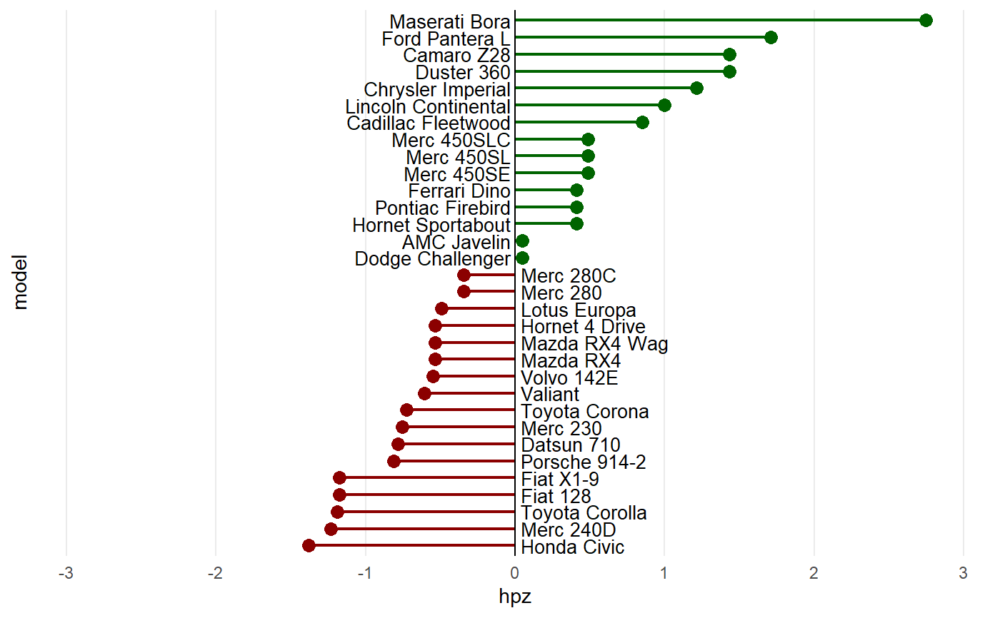
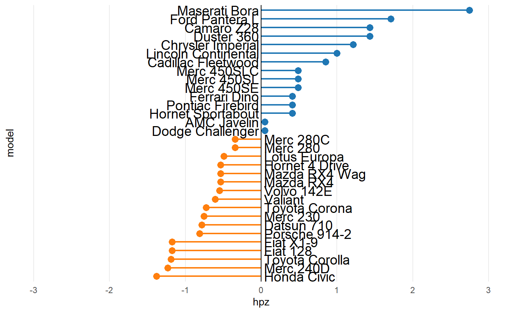
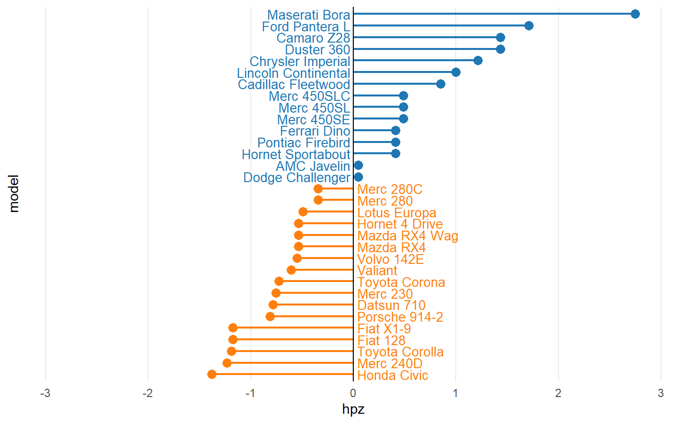

Easily create a diverging lollipop chart
diverging_lollipop_chart( data, x, y, lollipop_colors = c("#1F77B4", "#FF7F0E"), line_size = 0.75, point_size = 3, text_color = "black", text_size = 10 )
| data | Dataset to use for the diverging lollipop chart |
|---|---|
| x |
|
| y |
|
| lollipop_colors | A |
| line_size |
|
| point_size |
|
| text_color |
|
| text_size |
|
An object of class ggplot
if (requireNamespace("tidyr")) { library(magrittr) data(biomedicalrevenue) biomedicalrevenue %>% dplyr::filter(year > 2016) %>% tidyr::pivot_wider( values_from = revenue, names_from = year, names_prefix = "revenue_" ) %>% dplyr::mutate(diff = revenue_2018 - revenue_2017) %>% diverging_lollipop_chart(company, diff) }data(mtcars) mtcars_z <- dplyr::transmute( .data = mtcars, model = row.names(mtcars), hpz = scale(hp) ) diverging_lollipop_chart(mtcars_z, model, hpz)## Change the colors diverging_lollipop_chart(mtcars_z, model, hpz, lollipop_colors = c("darkgreen", "darkred"))## Increase the axis label font size diverging_lollipop_chart(mtcars_z, model, hpz, text_size = 14)## Display the axis label text in the same color as the bars diverging_lollipop_chart(mtcars_z, model, hpz, text_color = c("#1F77B4", "#FF7F0E"))